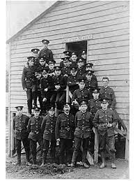

Discover the rich history of Bradford during World War 1 and learn about the brave men and women who served in the war. This section allows you to search for individuals from Bradford who contributed to the war effort, with details constantly being updated and preserved for future generations.
Explore detailed records of individuals from Bradford who served in World War 1. Whether they were soldiers, nurses, or civilians, their stories are preserved here.
Our team is constantly researching and adding new material to the databases, ensuring that the memory of Bradford's contribution to World War 1 is kept alive for future generations.
As new data becomes available, we update our records to provide an accurate and comprehensive history of Bradford’s involvement in the war, helping to honor those who served.
Explore the biographies of the brave soldiers from Bradford who fought in World War 1, and discover their heroic contributions to the war effort.

This role of honour lists those from Bradford who supported the war from home, working tirelessly behind the scenes to ensure victory.
An extensive database of records documenting the soldiers from Bradford who served in World War 1, complete with detailed personal histories and military service information.